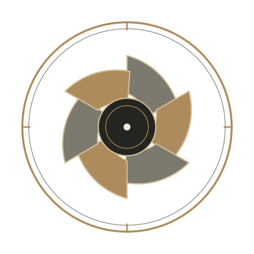

Bronze Atelier · Minimal emblem concept

Prompt Engine
One precision ring, a six-blade optical iris, and a single focal point. The gear teeth, circuit traces, and surrounding mini-icons are removed.